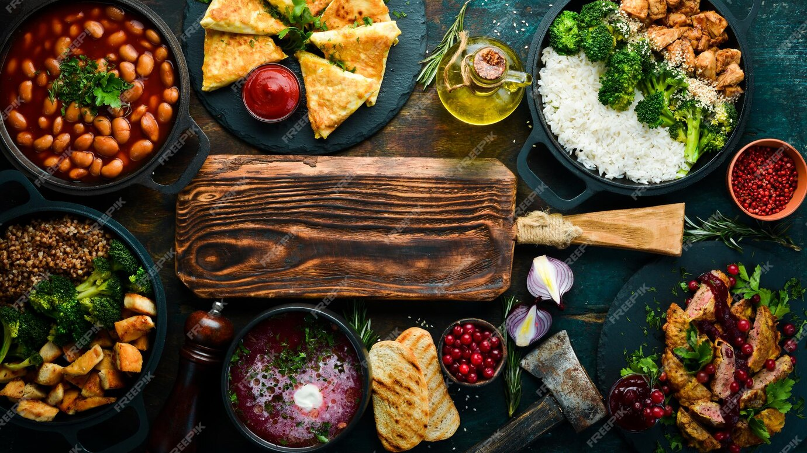

<ion-header [translucent]="true">
  <ion-toolbar>
    <ion-title>
      Cez's
    </ion-title>
  </ion-toolbar>
</ion-header>

<ion-content [fullscreen]="true">
  <ion-header collapse="condense">
    <ion-toolbar>
      <ion-title size="large">Cez's</ion-title>
    </ion-toolbar>
  </ion-header>

  <ion-card>
    
    <ion-card-header>
      <ion-card-title>Cez's</ion-card-title>
    </ion-card-header>
  </ion-card>

    <ion-list>
      <!-- Loop através do array 'itens' para exibir os itens-->
       <ion-item *ngFor="let item of itens" (click)="irParaPagina(item.url)">
        <ion-label style="text-align: center;">{{item.nome}}</ion-label>
       </ion-item>
    </ion-list>

  <ion-card>
    <a href="https://maps.app.goo.gl/gCqRQyvM12npJT889" target="_blank" rel="noopener noreferrer">
      
      <ion-card-header>
        <ion-card-title>Rua dos Sabores, 123 - Bairro dos Gastrônomos, São Paulo, SP, 04567-890</ion-card-title>
      </ion-card-header>
    </a>
  </ion-card>
  
</ion-content>
